CS 8803 CGA - Radiometry Foundation
Radiometry
Definition
- Radiometry studies the measurement of electromagnetic radiation, including visible light.
- Radiometry quantifies radiation in terms of its physical power (energy per unit time) and spatial distribution.
Photons
- A photon is an elementary particle, the quantum of the electromagnetic field.
- Photons have different ways of interaction: absorption, emission, scattering, etc.
- In computer rendering, photon mapping is a global illumination technique for simulating caustics and soft shadows.
- We measure energy by “counting photons”.
Units
Each photon carries energy.
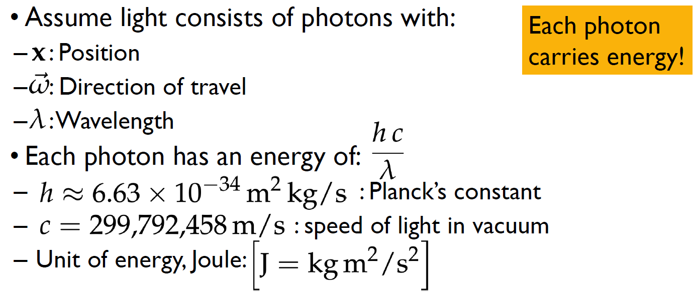
Radiometry Properties
- Flux
Total amount of radiant energy passing through surface or space per unit time.
Flux = Energy / Time
Examples:
- number of photons hitting a wall per second
- number of photons leaving a lightbulb per second
- Irradiance E
Area density of flux.
Flux per unit area arriving at a surface.
Irradiance = Arriving Flux / Area
Example: Number of photons hittinga small patch of a wall per second, divided by size of patch
- Radiosity B
Area density of flux.
Flux per unit area leaving a surface.
Radiosity = Leaving Flux / Area
Example: Number of photons reflecting off a small patch of a wall per second, divided by size of patch.
- Intensity I
Directional density of flux.
Power (flux) per solid angle.
Angle/Solid angle: Length/area of object’s projection onto a unit circle/sphere (angle = l/r; solid angle = A/r^2).
Intensity = Flux / Solid Angle
Example: Power per unit solid angle emanating from a point source.
- Radiance L (most important)
Flux density （flux is energy per unit time） per unit solid angle, per perpendicular unit area.
Intensity = (Flux / Solid Angle) / Perpendicular Area
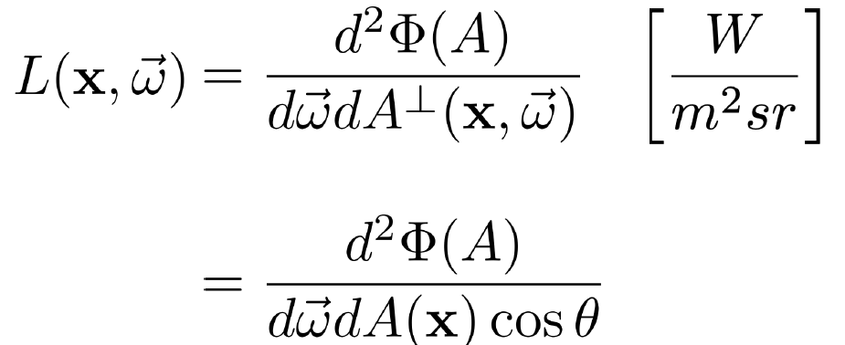
The idea of perpendicular area connects to the Lambertian model we studied in Phong shading.
(From Wiki: The Lambertian model describes the behavior of ideal diffuse reflecting surfaces, known as Lambertian surfaces. These surfaces exhibit uniform brightness when observed from any angle, meaning their apparent brightness remains constant regardless of the observer’s viewpoint. This characteristic is due to Lambert’s cosine law, which states that the radiant intensity observed from such a surface is directly proportional to the cosine of the angle between the observer’s line of sight and the surface normal.)
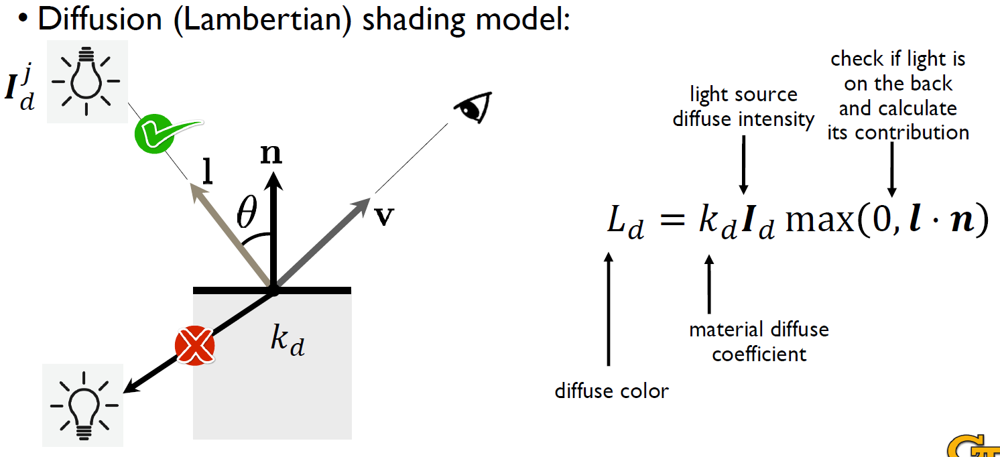
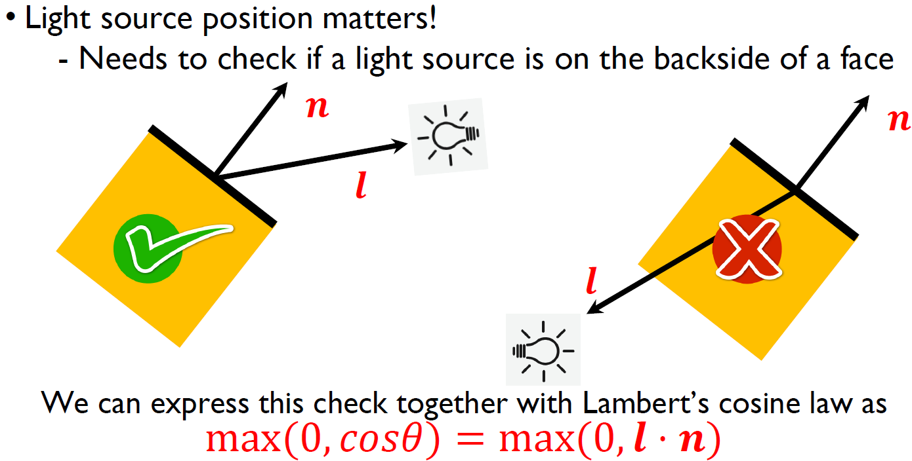
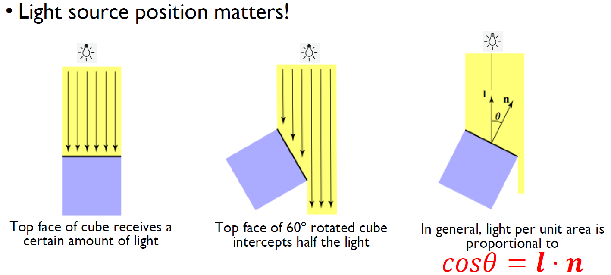
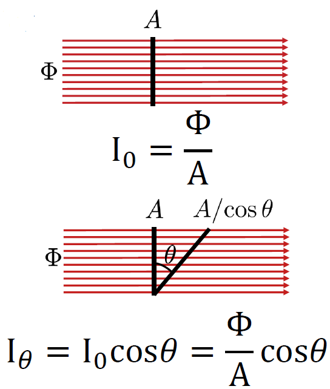
Summary
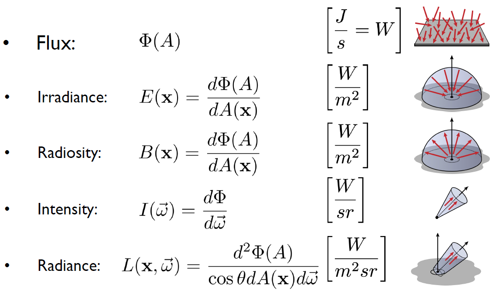
Radiance and Ray
- Fundamental quantity for ray tracing
- Remains constant along a ray in a vacuum-like media (类真空介质)
- Varys spatially along a ray in a participating media (参与介质，Participating media may absorb, emit and/or scatter light. )
- Incident radiance at one point can be expressed as outgoing radiance at another point:
Expressing flux with radiance
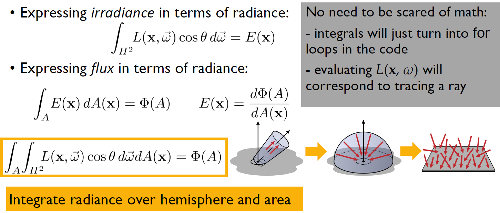
Bidirectional Reflectance Distribution Function (BRDF)
BRDF Definition
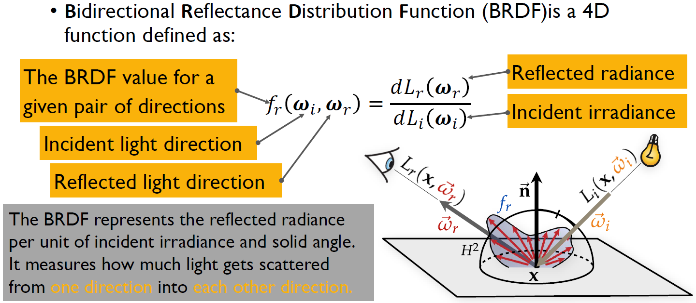
BRDF for Ideal Diffuse Reflection
Reflected radiance is a (hemi)spherical integral of incident radiance from all directions:
.
Here, (BRDF) is a constant, which means scattering light equal in all directions.
BRDF for Ideal Specular Reflection
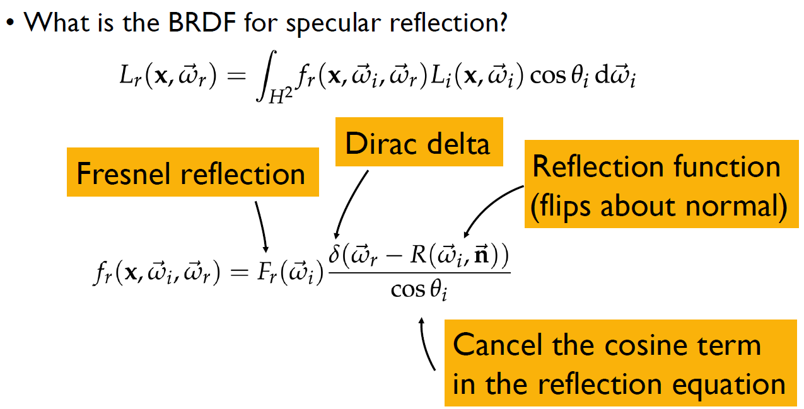
BRDF Properties
Real/physically-plausible BRDFs obey:
-
Energy Conservation:
-
Symmetry (Helmholtz reciprocity):
Isotropic and Anisotropic BRDFs
- If the BRDF is unchanged as the material is rotated around the normal, then it is isotropic, otherwise it is anisotropic.
- Isotropic BRDFs are functions of just 3 variables ().
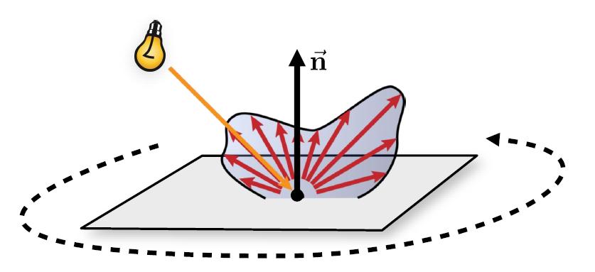
BRDF connection to Phong Shading
The connection between BRDF (Bidirectional Reflectance Distribution Function) and Phong shading lies in how both describe the way light reflects off surfaces, but they differ in complexity and realism.
BRDF (Bidirectional Reflectance Distribution Function)
-
What it is: A mathematical function that describes how light is reflected at an opaque surface.
-
Definition: It defines the ratio of reflected radiance in a given outgoing direction to the irradiance from an incoming light direction.
-
General Form:
Where:- : Incoming light direction
- : Outgoing (view) direction
- : BRDF value
-
Purpose: Used in physically based rendering (PBR) to simulate realistic material reflections (like metal, wood, plastic).
Phong Shading Model
-
What it is: A simple, empirical model for approximating light reflection on shiny surfaces.
-
Formula:
Where:- : Ambient, diffuse, and specular reflection coefficients
- : Light direction
- : Surface normal
- : Reflection direction
- : View direction
- : Shininess coefficient
-
Purpose: Approximates the way light reflects off a shiny surface with diffuse and specular highlights.
Phong shading is like a basic, artist-friendly shortcut derived from the deeper concept of BRDF. It’s good for simple, fast rendering, while BRDF is the go-to for realistic, physically accurate rendering in modern graphics engines.